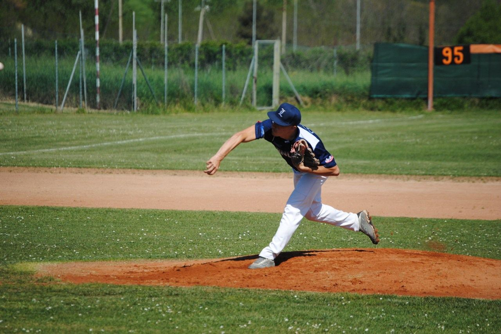
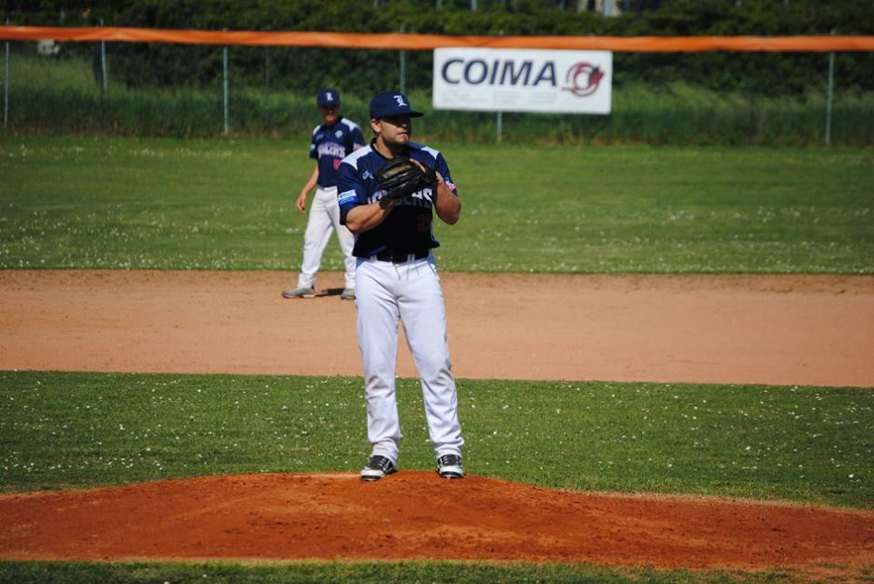

Grazie alla doppia vittoria sullo Junior Rimini nel recupero della quinta giornata, i ragazzi di Rosellini & C. tornano ad occupare la terza posizione in classifica rispettivamente dietro a Yankees S. Giovanni e Longbridge Bologna, appaiati al Riccione e sopra lo stesso Rimini.
Una classifica piuttosto corta nel suo insieme che nelle ultime settimane ha cambiato il proprio volto più volte. 
I Lancers hanno recuperato terreno vincendo 6 incontri degli ultimi 8 disputati ma come già detto si possono recriminare moltissime, ghiotte, occasioni.
 Nel turno precedente contro Longbridge la gara del mattino è terminata 3-2 a favore degli emiliani che si sono confermati un’ottima squadra, giovane ma ben attrezzata in ogni reparto.Tante occasioni sfumate per i lastrigiani che devono fare i conti con ben 9 uomini lasciati in base; una gara comunque condotta magistralmente in difesa e sul monte di lancio dal duo Menoni-Degl’Innocenti, ottima anche la prova in gara 2 di Morese.
Nel turno precedente contro Longbridge la gara del mattino è terminata 3-2 a favore degli emiliani che si sono confermati un’ottima squadra, giovane ma ben attrezzata in ogni reparto.Tante occasioni sfumate per i lastrigiani che devono fare i conti con ben 9 uomini lasciati in base; una gara comunque condotta magistralmente in difesa e sul monte di lancio dal duo Menoni-Degl’Innocenti, ottima anche la prova in gara 2 di Morese.
Lo stesso Morese si è distinto nelle gare contro lo Junior Rimini; prima ha chiuso gara 1 lanciando 3 inning dopo le ottime prove di Menoni e Vannuzzi, poi ha imbrigliato le giovani mazze dei romagnoli per altri 9 inning di gara 2.
La difesa ha continuato il suo percorso di crescita e finalmente si è visto un attacco, seppur non perfetto, più cinico e concreto con ben 22 valide e 18 punti segnati in due partite.
Tornando ancora più indietro si sono rivelate molto importanti le due vittorie esterne su Cupra, due perle sul monte ed un attacco potente hanno reso possibile l’impresa.
Complete game per Degl’Innocenti e Morese supportati da una difesa quasi perfetta, su tutte le tre prese sul warning track del nostro esternone Geri.
L’attacco registra 16 valide per un totale di 11 punto (7-0 gara 1 e 4-1 gara 2), buone le prove di Reggioli, Rudaj, Parrini e Becattini.
Si torna in campo Sabato 25 Agosto per un amichevole con gli amici del Livorno sul diamante labronico; partita utile a togliere dai guantoni un po di salsedine e affrontare al meglio la settima giornata di ritorno prevista per Domenica 2 Settembre in casa contro Yankees Bologna.
Buone Vacanze a tutti!